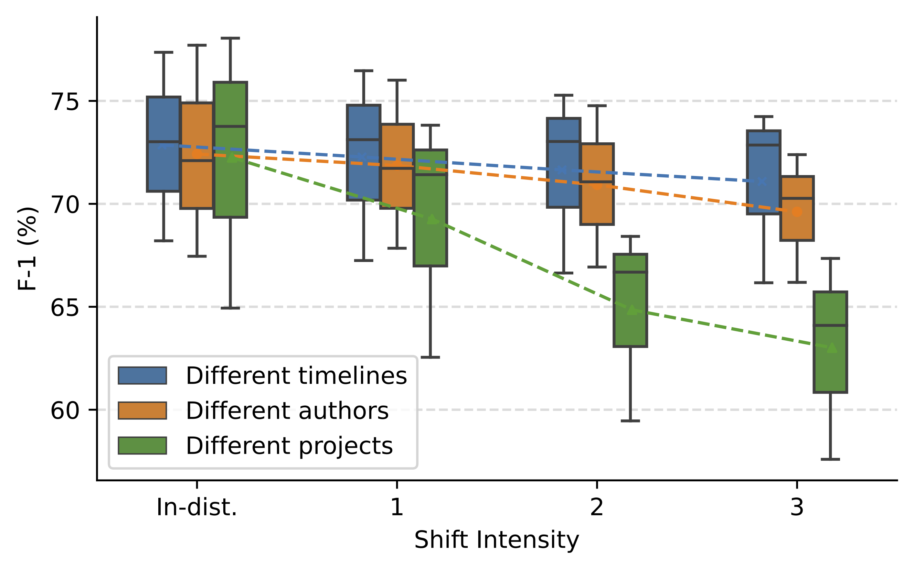

We systematically study the effect of three common real-world code data shifts on DL software performance.
We also investigate the quality of existing state-of-the-art uncertainty approaches in terms of code analysis input validation under data shifts and provide large-scale benchmarks of their performance.
Below is the illustration of three code data shifts:
Study overview
Below is the illustration of our study overview:
Code analysis architecture
Below is an example of the code analysis architecture for Method Name Prediction (MNP) task:
Model performance under three code data shifts with varying shift intensities (old version)
* In the old version, we use three models (Code2Vec, CodeBERTa, GraphCodeBERT) for Method Name Prediction, and another three models (CodeRNN, CodeBERT, CodeGPT) for Code Completion.

Model performance under three code data shifts with varying shift intensities (LLM version)
* In the LLM version, we use three LLMs (open_llama_13b, gpt-neox-20b, xlm-roberta-xxl) for both MNP and CC tasks.
Misclassification prediction (old version)
Misclassification prediction (current version)
* In the current version, we use all six models (Code2Vec, CodeBERTa, GraphCodeBERT, CodeRNN, CodeBERT, CodeGPT) for both MNP and CC tasks.
Misclassification prediction (LLM version)
Input validation (old version)
Misclassification prediction for case study (old version)